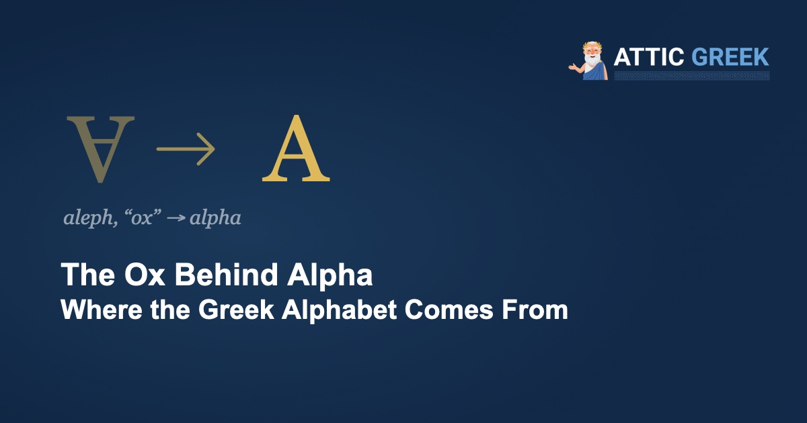

Most scholars think the first letter of the alphabet began as a drawing of an ox. You can test it yourself: turn a capital A upside down and look for the head and the two horns.
Where does the word “alphabet” come from?
From the names of the first two Greek letters, ἄλφα (álpha) and βῆτα (bêta), put together. In Greek, those two names mean nothing at all. They are borrowed, and in the language they were borrowed from they meant something very ordinary: aleph was the Phoenician word for “ox,” and beth was the word for “house.”
Each Phoenician letter name was a word that began with the sound of the letter. So the alphabet, in effect, opened with “ox, house.”
How did an ox become a letter?
The trick is called acrophony: draw a picture, then use it only for the first sound of its name. The ox's name began with a glottal stop, a tiny catch in the throat, so the ox sign came to stand for that sound.
Scholars trace the sign back to a Proto-Sinaitic picture of an ox's head, possibly modeled on an Egyptian hieroglyph. (The exact origin is still debated.) Over the centuries the picture was simplified until only the essentials were left, a triangular head with two horns, and the sign was turned around as it travelled. That is why a capital A upside down still looks like a head with horns.
How did the Greeks make it their own?
The Greeks borrowed the script around the 9th to 8th centuries BC (some of the oldest known Greek inscriptions date to about 740 BC) and kept the letter names, though the meanings were lost: in Greek, alpha, beta and gamma are just labels.
Their real stroke of genius was about vowels. The Phoenician script had only consonants. Aleph stood for a sound Greek didn't have, so the Greeks gave it a vowel value: A. They did the same with other letters they had no use for as consonants. Phoenician he became epsilon (E), yod became iota (I), ayin became omicron (O), and waw became upsilon (Y). By turning spare consonants into vowels, they produced the script often called the first true alphabet.
Did the Greeks know where their letters came from?
Some did. Herodotus (5.58–59) says the letters were brought to Greece by Phoenicians who came with the legendary Cadmus, and most modern scholars agree with him on the Phoenician source, if not on the legend. The Phoenicians wrote from right to left, which is one reason early Greek was written backwards too, as we saw in our article on boustrophedon.
The ox is still with us. The Latin A, the Cyrillic А, Hebrew aleph and Arabic alif all descend from the same ancient sign. Every time you write an A, you are sketching, very faintly, an ox's head.
Start with the first letter
Attic Greek teaches Ancient Greek from the alphabet up — 210 structured lessons, quizzes, flashcards, and annotated readings from Homer, Plato, and the great classical authors, with Socrates himself as your guide.
Start with 5 free lessons →Five lessons and the opening of the Odyssey, free forever. Then $4.99/month or $34.99/year.